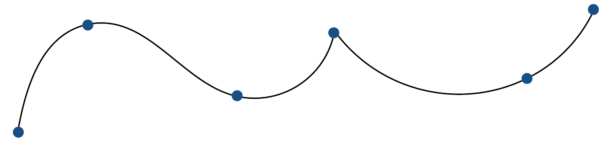
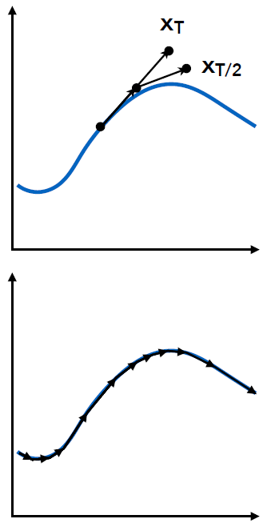

资源
课程
Lecture 21 Animation
Animation
“Bring things to life”
“让事物变得栩栩如生”
-
Communication tool
通讯工具
-
Aesthetic issues often dominate technical issues
美观问题常常主导技术问题
An extension of modeling
建模的延伸
-
Represent scene models as a function of time
将场景模型表示为时间的函数
Output: sequence of images that when viewed sequentially provide a sense of motion
输出：按顺序观看时提供运动感的图像序列
-
Film: 24 frames per second
电影：每秒 24 帧
-
Video (in general): 30 fps
视频（一般）：30 fps
-
Virtual reality: 90 fps
虚拟现实：90 fps
Historical Points in Animation
早在公元前 3200 年，就有动画这个概念。
跑马灯。
First Film
Originally used as scientific tool rather than for entertainment
最初用作科学工具而不是娱乐
Critical technology that accelerated development of animation
加速动画发展的关键技术
First Hand-Drawn Feature-Length (>40mins) Animation
第一个手绘长片（>40 分钟）动画
First Digital-Computer-Generated Animation
最早的电脑生成的动画
First CG Feature-Length Film
最早的图形学电影
Keyframe Animation
Animator (e.g. lead animator) creates keyframes
动画师（例如首席动画师）创建关键帧
Assistant (person or computer) creates in-between frames (“tweening”)
助手（人或计算机）创建中间帧（“补间”）
Keyframe Interpolation
Think of each frame as a vector of parameter values
将每一帧视为参数值的向量
Keyframe Interpolation of Each Parameter
各参数关键帧插值
Linear interpolation usually not good enough
线性插值通常不够好

Recall splines for smooth / controllable interpolation
调用样条曲线以实现平滑/可控插值
Physical Simulation
Physically Based Animation
基于物理的动画
衣服上的每个点都受重力和其他地方的牵引力共同作用。
Generate motion of objects using numerical simulation
使用数值模拟生成物体的运动
Example: Cloth Simulation
Example: Fluids
Mass Spring System: Example of Modeling a Dynamic System
质量弹簧系统：动态系统建模示例
Example: Mass Spring Rope
Example: Hair
Example: Mass Spring Mesh
A Simple Spring
Idealized spring
理想的弹簧
\begin{aligned}&f_{a\to b}=k_S(\boldsymbol{b}-\boldsymbol{a})\\&f_{b\to a}=-f_{a\to b}\end{aligned}Force pulls points together
力将点拉到一起
Strength proportional to displacement (Hooke’ s Law)
强度与位移成正比（胡克定律）
is a spring coefficient: stiffness
是弹簧系数：刚度
Problem: this spring wants to have zero length
问题：这个弹簧想要零长度
Non-Zero Length Spring
Spring with non-zero rest length
弹簧有起始长度
\boldsymbol{f}_{a\to b}=k_S\frac{\boldsymbol{b}-\boldsymbol{a}}{||\boldsymbol{b}-\boldsymbol{a}||}\left(||\boldsymbol{b}-\boldsymbol{a}||-l\right)Problem: oscillates forever
问题：永远振荡
Dot Notation for Derivatives
导数的点符号
If \boldsymbol x is a vector for the position of a point of interest, we will use dot notation for velocity and acceleration:
如果 \boldsymbol x 是感兴趣点位置的向量，我们将使用点符号表示速度和加速度：
\begin{aligned}&\boldsymbol{x}\\&\boldsymbol{\dot{x}}=\boldsymbol{\upsilon}\\&\boldsymbol{\ddot{x}}=\boldsymbol{a}\end{aligned}Introducing Energy Loss
引入能量损失（解决永远震荡的问题）
Simple motion damping
简单运动阻尼
\boldsymbol{f}=-k_d\boldsymbol{\dot{b}}-
Behaves like viscous drag on motion
表现得像运动中的粘性阻力
-
Slows down motion in the direction of velocity
减慢速度方向的运动
-
is a damping coefficient
是阻尼系数
Problem: slows down all motion
问题：减慢所有运动
-
Want a rusty spring’ s oscillations to slow down, but should it also fall to the ground more slowly?
希望生锈的弹簧的振动减慢，但它是否也应该更慢地落到地面？
Internal Damping for Spring
弹簧内部阻尼
Damp only the internal, spring-driven motion
仅阻尼内部弹簧驱动运动
f_{\boldsymbol{b}}=-k_d\frac{b-a}{||b-a||}(\dot{\boldsymbol{b}}-\dot{\boldsymbol{a}})\cdot\frac{b-a}{||b-a||}-
：
Damping force applied on
施加在 上的阻尼力
-
\frac{b-a}{||b-a||}(\dot{\boldsymbol{b}}-\dot{\boldsymbol{a}})：
Relative velocity projected to the direction from a to (scalar)
投影到从 到 方向的相对速度（标量）
-
：
Direction from to
从 到 的方向
-
Viscous drag only on change in spring length
粘性阻力仅随着弹簧长度的变化而变化
-
Won’ t slow group motion for the spring system (e.g. global translation or rotation of the group)
不会减慢弹簧系统的组运动（例如组的全局平移或旋转）
-
-
Note: This is only one specific type of damping
注意：这只是一种特定类型的阻尼
Structures from Springs
弹簧结构
Behavior is determined by structure linkages
行为由结构联系决定
This structure will not resist shearing
该结构不能抵抗剪切
This structure will not resist out-of-plane bending…
这种结构不能抵抗面外弯曲…
This structure will resist shearing but has anisotropic bias
这种结构可以抵抗剪切，但具有各向异性偏差
This structure will not resist out-of-plane bending either…
这种结构也不能抵抗面外弯曲…
This structure will resist shearing.
该结构将抵抗剪切。
Less directional bias.
方向性偏差较小。
This structure will not resist out-of-plane bending either…
这种结构也不能抵抗面外弯曲…
They behave like what they are (obviously!)
他们的行为就像他们本来的样子（显然！）
This structure will resist shearing.
该结构将抵抗剪切。
Less directional bias.
方向性偏差较小。
This structure will resist out-of-plane bending
该结构将抵抗面外弯曲
Red springs should be much weaker
红色弹簧应该弱得多
这种结构就可以很好地模拟布料。
Particle Systems
Model dynamical systems as collections of large numbers of particles
将动力系统建模为大量粒子的集合
Each particle’ s motion is defined by a set of physical (or non-physical) forces
每个粒子的运动由一组物理（或非物理）力定义
Popular technique in graphics and games
图形和游戏中的流行技术
-
Easy to understand, implement
易于理解、实施
-
Scalable: fewer particles for speed, more for higher complexity
可扩展：更少的粒子提高速度，更多的粒子提高复杂性
Challenges
挑战
-
May need many particles (e.g. fluids)
可能需要许多颗粒（例如液体）
-
May need acceleration structures (e.g. to find nearest particles for interactions)
可能需要加速结构（例如寻找最近的粒子进行相互作用）
Particle System Animations
For each frame in animation
对于动画中的每一帧
-
[If needed] Create new particles
[如果需要] 创建新粒子
-
Calculate forces on each particle
计算每个粒子上的力
-
Update each particle’ s position and velocity
更新每个粒子的位置和速度
-
[If needed] Remove dead particles
[如果需要] 去除死颗粒
-
Render particles
渲染粒子
Particle System Forces
Attraction and repulsion forces
吸引力和排斥力
-
Gravity, electromagnetism, …
重力、电磁力……
-
Springs, propulsion, …
弹簧、推进力……
Damping forces
阻尼力
-
Friction, air drag, viscosity, …
摩擦力、空气阻力、粘度……
Collisions
碰撞
-
Walls, containers, fixed objects, …
墙壁、容器、固定物体……
-
Dynamic objects, character body parts, …
动态物体、角色身体部位……
Gravitational Attraction
Newton’ s universal law of gravitation
牛顿万有引力定律
-
Gravitational pull between particles
粒子之间的引力
Example: Galaxy Simulation
Example: Particle-Based Fluids
Simulated Flocking as an ODE
作为 ODE 的模拟植绒
Model each bird as a particle
将每只鸟建模为一个粒子
Subject to very simple forces:
受到非常简单的力的影响：
-
attraction to center of neighbors
对邻居中心的吸引力
-
repulsion from individual neighbors
个别邻居的排斥
-
alignment toward average trajectory of neighbors
与邻居的平均轨迹对齐
Simulate evolution of large particle system numerically
数值模拟大粒子系统的演化
Emergent complex behavior (also seen in fish, bees, …)
突发的复杂行为（也见于鱼、蜜蜂……）
Example: Molecular Dynamics
Example: Crowds + “Rock” Dynamics
Forward Kinematics
正向运动学
Articulated skeleton
铰接骨架
-
Topology (what’ s connected to what)
拓扑（什么与什么相连）
-
Geometric relations from joints
关节的几何关系
-
Tree structure (in absence of loops)
树结构（没有循环）
Joint types
接头类型
-
Pin (1D rotation)
销（一维旋转）
-
Ball (2D rotation)
球（2D 旋转）
-
Prismatic joint (translation)
棱柱接头（转换）
根据骨骼的运动计算出终点的位置。
Kinematics Pros and Cons
运动学的优点和缺点
Strengths
优势
-
Direct control is convenient
直接控制方便
-
Implementation is straightforward
实施很简单
Weaknesses
弱点
-
Animation may be inconsistent with physics
动画可能与物理不一致
-
Time consuming for artists
艺术家耗时
Inverse Kinematics
已知终点反推运动情况。
Why is the problem hard?
-
Multiple solutions in configuration space
可能导致多解。
-
Solutions may not always exist
可能导致无解（终点只可能在外圆和内圆之间）
Numerical solution to general N-link IK problem
一般 N-link IK 问题的数值求解
-
Choose an initial configuration
选择初始配置
-
Define an error metric (e.g. square of distance between goal and current position)
定义误差度量（例如目标和当前位置之间距离的平方）
-
Compute gradient of error as function of configuration
计算作为配置函数的误差梯度
-
Apply gradient descent (or Newton’ s method, or other optimization procedure)
应用梯度下降（或牛顿法，或其他优化程序）
Rigging
Rigging is a set of higher level controls on a character that allow more rapid & intuitive modification of pose, deformations, expression, etc.
绑定是对角色的一组更高级别的控制，可以更快速、更直观地修改姿势、变形、表情等。
Important
重要的
-
Like strings on a puppet
就像木偶上的弦一样
-
Captures all meaningful
捕捉所有有意义的内容
character changes
性格变化
-
Varies from character to
因角色而异
character
特点
Expensive to create
创建成本昂贵
-
Manual effort
手动操作
-
Requires both artistic and technical training
需要艺术和技术培训
Blend Shapes
Instead of skeleton, interpolate directly between surfaces
代替骨架，直接在曲面之间插值
E.g., model a collection of facial
例如，对面部集合进行建模
expressions:
表达式：
Simplest scheme: take linear combination of vertex positions
最简单的方案：采用顶点位置的线性组合
Spline used to control choice of weights over time
样条曲线用于控制随时间变化的权重选择
Motion Capture
动作捕捉
Data-driven approach to creating animation sequences
创建动画序列的数据驱动方法
-
Record real-world performances (e.g. person executing an activity)
记录现实世界的表现（例如执行某项活动的人）
-
Extract pose as a function of time from the data collected
从收集的数据中提取姿势作为时间的函数
Motion Capture Pros and Cons
Strengths
优势
-
Can capture large amounts of real data quickly
可以快速捕获大量真实数据
-
Realism can be high
真实感可能很高
Weaknesses
缺点
-
Complex and costly set-ups
复杂且昂贵的设置
-
Captured animation may not meet artistic needs, requiring alterations
捕获的动画可能无法满足艺术需求，需要进行修改
Optical Motion Capture
-
Markers on subject
主题标记
-
Positions by triangulation from multiple cameras
通过多个摄像机的三角测量进行定位
-
8+ cameras, 240 Hz, occlusions are difficult
8 个以上摄像头，240 Hz，遮挡困难
Motion Data
动作数据
Challenges of Facial Animation
Uncanny valley（恐怖谷效应）
-
In robotics and graphics
在机器人和图形学领域
-
As artificial character appearance approaches human realism, our emotional response goes negative, until it achieves a sufficiently convincing level of realism in expression
当人造角色外观接近人类现实主义时，我们的情绪反应会变得消极，直到它在表达上达到足够令人信服的现实主义水平
（还要防止别人拿人造角色干坏事）
Facial Motion Capture
面部动作捕捉
《阿凡达》就是用面部动作捕捉拍的。
The Production Pipeline
动画制作流程。
Lecture 22: Animation (cont.)
Single Particle Simulation
First study motion of a single particle
首次研究单个粒子的运动
-
Later, generalize to a multitude of particles
随后，推广到多个粒子
To start, assume motion of particle determined by a velocity vector field that is a function of position and time:
首先，假设粒子的运动由速度矢量场确定，速度矢量场是位置和时间的函数：
粒子所处的位置决定了它的速度。
Ordinary Differential Equation (ODE)
常微分方程 (ODE)
Computing position of particle over time requires solving a firstorder ordinary differential equation:
计算粒子随时间的位置需要求解一阶常微分方程：
“First-order” refers to the first derivative being taken.
“一阶”是指所取的一阶导数。
“Ordinary” means no “partial” derivatives, i.e. is just a function of
“普通”意味着没有“偏”导数，即 只是 的函数

We can solve the ODE, subject to a given initial particle position , by using forward numerical integration
我们可以在给定初始粒子位置 的情况下，通过使用前向数值积分来求解 ODE
Euler’ s Method
欧拉方法（Euler’s Method）是一种常用的数值解微分方程的方法。它由瑞士数学家莱昂哈德·欧拉在 18 世纪提出，并且被广泛应用于工程、物理、计算机图形学等领域。
欧拉方法主要用于解决常微分方程（ODE）的初值问题，即已知某个点上的初始条件，求解该点附近的微分方程的近似解。其基本思想是通过离散化的步骤逐步逼近微分方程的解。
这里简要说明欧拉方法的步骤：
离散化时间：首先，我们将自变量的定义域（通常是时间）分成小的时间间隔。令 表示时间步长。
近似初始值：根据初始条件，确定初始值。例如，对于常微分方程 )，我们需要初始值 ，其中 是已知的。
迭代逼近：利用微分方程的近似线性关系，在每个时间步长上，根据当前点的斜率（即微分方程在该点处的导数值），通过线性近似来计算下一个点的值。
具体地，对于欧拉方法，迭代公式如下：
其中， 是第 个时间步长的自变量值， 是第 个时间步长上的近似解， 是微分方程在 处的斜率（即导数值）。
重复迭代：重复上述步骤，直到达到所需的时间点或满足某个终止条件。
欧拉方法的优点是简单易实现，但它的精度通常较低，特别是在处理步长较大、导数变化剧烈的情况下。因此，在实际应用中，可能需要考虑其他更高阶的数值积分方法来提高精度。
Euler’ s Method (a.k.a. Forward Euler, Explicit Euler)
欧拉方法（又称前向欧拉、显式欧拉）
-
Simple iterative method
简单的迭代方法
-
Commonly used
常用
-
Very inaccurate
很不准确
-
Most often goes unstable
通常会变得不稳定
Euler’ s Method - Errors
With numerical integration, errors accumulate
通过数值积分，误差会累积
Euler integration is particularly bad
欧拉积分特别糟糕
**Example: **
x^{t+\Delta t}=x^t+\Delta t\boldsymbol{v}(\boldsymbol{x},t)Instability of the Euler Method
The Euler method (explicit / forward)
欧拉方法（显式/前向）
x^{t+\Delta t}=x^t+\Delta t\boldsymbol{v}(\boldsymbol{x},t)Two key problems:
两个关键问题：
-
Inaccuracies increase as time step increases
误差随着时间步 的增加而增加
-
Instability is a common, serious problem that can cause simulation to diverge
不稳定是一个常见的严重问题，可能导致模拟出现偏差
Errors and Instability
Solving by numerical integration with finite differences leads to two problems:
通过有限差分数值积分求解会导致两个问题：
Errors
错误
-
Errors at each time step accumulate.
每个时间步的错误都会累积。
Accuracy decreases as simulation proceeds
随着模拟的进行，准确性会降低
-
Accuracy may not be critical in graphics applications
准确性在图形应用程序中可能并不重要
Instability
不稳定
-
Errors can compound, causing the simulation to diverge even when the underlying system does not
错误可能会复合，导致模拟出现偏差，即使底层系统没有出现偏差
-
Lack of stability is a fundamental problem in simulation, and cannot be ignored
缺乏稳定性是仿真中的一个根本问题，不容忽视
Combating Instability
对抗不稳定
Some Methods to Combat Instability
应对不稳定的一些方法
Midpoint method / Modified Euler
中点法/修正欧拉法
-
Average velocities at start and endpoint
起点和终点的平均速度
Adaptive step size
自适应步长
-
Compare one step and two half-steps, recursively, until error is acceptable
递归地比较一步和两个半步，直到误差可以接受
Implicit methods
隐式方法
-
Use the velocity at the next time step (hard)
在下一个时间步使用速度（困难）
Position-based / Verlet integration
基于位置/Verlet 集成
-
Constrain positions and velocities of particles after time step
时间步长后约束粒子的位置和速度
Midpoint Method
中点法
-
Compute Euler step (a)
计算欧拉步骤 (a)
-
Compute derivative at midpoint of Euler step (b)
计算欧拉步骤 (b) 中点的导数
-
Update position using midpoint derivative ©
使用中点导数更新位置 ©
Modified Euler
修改欧拉
-
Average velocity at start and end of step
步骤开始和结束时的平均速度
-
Better results
更好的结果
Adaptive Step Size

-
Technique for choosing step size based on error estimate
基于误差估计选择步长的技术
-
Very practical technique
非常实用的技术
-
But may need very small steps!
但可能需要非常小的步骤！
Repeat until error is below threshold:
重复直到误差低于阈值：
-
Compute an Euler step, size
计算 欧拉步，大小
-
Compute two Euler steps, size
计算 两个欧拉步，大小
-
Compute error || x_T – x_{T/2} ||
计算错误 || x_T – x_{T/2} ||
-
If (error > threshold) reduce step size and try again
如果（错误>阈值）减小步长并重试
Implicit Euler Method
隐式欧拉法
-
Informally called backward methods
非正式地称为后向方法
-
Use derivatives in the future, for the current step
在未来使用衍生品，用于当前步骤
-
Solve nonlinear problem for \boldsymbol{x}^{t+\Delta t} and \boldsymbol{\dot{x}}^{t+\Delta t}
求解 \boldsymbol{x}^{t+\Delta t} 和 \boldsymbol{\dot{x}}^{t+\Delta t} 的非线性问题
-
Use root-finding algorithm, e.g. Newton’ s method
使用寻根算法，例如 牛顿法
-
Offers much better stability
提供更好的稳定性
How to determine / quantize “stability”?
如何确定/量化“稳定性”？
-
We use the local truncation error (every step) / total accumulated error (overall)
我们使用局部截断误差（每一步）/总累积误差（总体）
-
Absolute values do not matter, but the orders w.r.t. step
绝对值并不重要，但顺序是重要的。
-
Implicit Euler has order , which means that
隐式欧拉的阶数为 ，这意味着
-
Local truncation error: and
局部截断错误： 和
-
Global truncation error: ( is the step, i.e. )
全局截断错误：（ 是步长，即 ）
-
-
Understanding of
对$ O(h)$ 的理解
-
If we halve , we can expect the error to halve as well
如果我们将 减半，我们可以预期误差也会减半
Runge-Kutta Families
A family of advanced methods for solving ODEs
一系列求解 ODE 的高级方法
-
Especially good at dealing with non-linearity
特别擅长处理非线性
-
It’ s order-four version is the most widely used, a.k.a. RK4
它的四阶版本是使用最广泛的，又名 RK4
Initial condition:
RK4solution:
where
Position-Based / Verlet Integration
基于位置/Verlet 集成
Idea:
主意：
-
After modified Euler forward-step, constrain positions of particles to prevent divergent, unstable behavior
修改欧拉前步后，约束粒子的位置以防止发散、不稳定的行为
-
Use constrained positions to calculate velocity
使用约束位置来计算速度
-
Both of these ideas will dissipate energy, stabilize
这两种想法都会消耗能量，稳定
Pros / cons
优点缺点
-
Fast and simple
快速且简单
-
Not physically based, dissipates energy (error)
不基于物理，消耗能量（错误）
Rigid Body Simulation
刚体模拟
Simple case
简单案例
-
Similar to simulating a particle
类似于模拟粒子
-
Just consider a bit more properties
只需考虑更多属性
-
:
positions
位置
-
:
rotation angle
旋转角度
-
:
angular velocity
角速度
-
:
forces
力
-
:
torque
扭矩
-
:
momentum of inertia
惯性动量